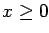
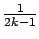
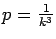

Due: Thursday, October 10, 2002.
- 1.
- Birge and Louveaux, page 109, question 1.
- 2.
- Birge and Louveaux, page 109, question 2.
- 3.
- Birge and Louveaux, page 121, question 1.
Assume 
and
for this question.
Also assume the recourse variables y are nonnegative.
The Gomory function for y1* is
.
See page 110 for other examples of Gomory functions.
- 4.
- Birge and Louveaux, page 121, question 2.
- 5.
- The complete graph below consists of a number of teeth and a base.
Each tooth has length one.
The base has width and length one.
It contains
vertices arranged as follows:
- There are k teeth in the graph, each of width
.
- There are k4 points evenly spaced in each
short horizontal segment, both at the top and the bottom of the teeth.
- There are 2k+1 teeth evenly spaced along each side of each tooth.
- There are four additional vertices at the corners of the handle.
The graph is complete, with each vertex connected to each other vertex.
The distance between two vertices is their standard Euclidean distance.
The optimal TSP tour for the graph is to travel up and down each tooth
successively and then go round the handle.
Let each vertex be present with probability
,
with the presence of each vertex independent of the others.
- (a)
- Show that the expected length of the a priori tour given
by the optimal TSP tour is approximately
E(LTSP)=2k+2, for large k.
- (b)
- Find another a priori tour that has an expected length of
approximately E(LPTSP)=4 in the probabilistic TSP, for large k.
- (c)
- As constructed, the ratio
takes a value of approximately the fifth root of n as
,
where n is the number of vertices in the graph.
By redesigning this graph, how large can you make the ratio
?
John E Mitchell
2002-09-30